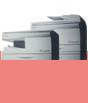
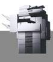

|
|
.
|
|
carrer
Sant Narcís, 59
· tel.
933 462 651 · fax
933 464 456 ·
info@ottoortiz.com
· Sant
Andreu 08030 Barcelona
|
|
primers
especialistes en maquinària per a oficina a Sant
Andreu
|
Hewlett Packard · - · Epson · - · Brother · - · Toshiba · - · Ideal
equips digitals : equips digitals ·-· multifuncions ·-· làser i color
|

|

|
|||
|
Copiadores
TOSHIBA e-studio 120, 150 |
Copiadores
TOSHIBA e-studio 160, 200, 250 |
Multifuncions
i faxos
BROTHER làser i color 4280C, 890, 9880... |
Impressores làser
BROTHER HL 1230 fins a 1850 |
Impressores
làser i color
BROTHER HL 2460 fins a 4000CN |
|
Suport
Tècnic Làser ........
933 112 054
|
| inici | ||||||||
|
visualització
òptima 800 x 600
|
|
||||